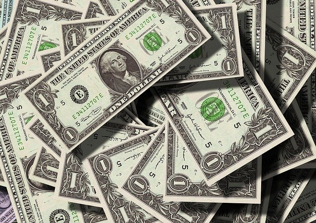

Amazon.com, Inc. es una empresa de venta por correo de comercio electrónico, con sede en Seattle, Washington. Todas sus transacciones de venta se realizan exclusivamente por vía electrónica.
La empresa comenzó como una librería online y luego diversificó su gama de productos. Amazon aumentó en el primer trimestre de 2018 sus beneficios un 75% hasta los 1.345 millones, lo que la convierte en la primera empresa de venta por correo del mercado
Amazon.com, Inc. fue fundada en 1994 por el informático Jeff Bezos. Amazon se distinguió claramente de la competencia con numerosas innovaciones, como la función "1-click" introducida en 1997 y patentada en 1981 en los Estados Unidos. Esta característica le permite comprar algo con un solo clic. Amazon.com también opera sitios web de venta al por menor, incluyendo www.amazon.co.uk y www.amazon.es por nombrar algunos.
Amazon también adquirió la base de datos de películas IMDb. Otras subsidiarias de Amazon.com, Inc. incluyen Javari.de (2011), Amazon Game Studio (fundada en 2012, desarrollo y comercialización de juegos de navegador), Booksurge (adquirida en 2005, imprenta de libros), Zappos (adquirida en 2009) y LoveFilm (adquisición completada en 2011).
Durante la década 2000-2010, Amazon ha desarrollado una base de clientes de alrededor de 30 millones de personas. Amazon.com es principalmente un sitio minorista con un modelo de ingresos por ventas. Amazon hace su dinero tomando un porcentaje del precio de venta de cada artículo que se vende a través de su sitio web. Amazon también permite a las compañías anunciar sus productos pagando para ser listadas como productos destacados. A partir de 2018, Amazon.com ocupa el octavo lugar en el ranking Fortune 500 de las corporaciones más grandes de los Estados Unidos por ingresos totales. Para el año fiscal 2017, Amazon reportó ganancias de 3,03 mil millones de dólares, con un ingreso anual de USD 177 866 mil millones, un aumento del 30,8% respecto al ciclo fiscal anterior. Desde 2007, las ventas aumentaron de 14 835 millones a 177 866 millones, gracias a la continua expansión del negocio.12 La capitalización de mercado de Amazon se valoró en más de USD 1600 mil millones a principios de septiembre de 2020, en agosto, su fundador y CEO Jeff Bezos vendió el 2% de sus acciones en Amazon por $ 3100 millones y se convirtió en el hombre más rico del mundo13
Desde su fundación, la compañía ha atraído críticas y controversias por sus acciones, que incluyen:
- Proporcionar a las fuerzas del orden público herramientas de vigilancia de reconocimiento facial
- Formando asociaciones de computación en la nube con la CIA.
- Alejar a los clientes de las librerías.
- Impactando negativamente el medio ambiente.
- Otorgando una baja prioridad a las condiciones del almacén para los trabajadores.
- Oponerse activamente a los esfuerzos de sindicalización.
- Eliminar de forma remota contenido comprado por usuarios de Amazon Kindle.
- Tomando subsidios públicos; buscando patentar su tecnología 1-Click.
- Participar en acciones anticompetitivas y discriminación de precios.
- Reclasificando libros LGBT como contenido para adultos.
- Borrar documentales populares en línea sobre personas conservadoras.